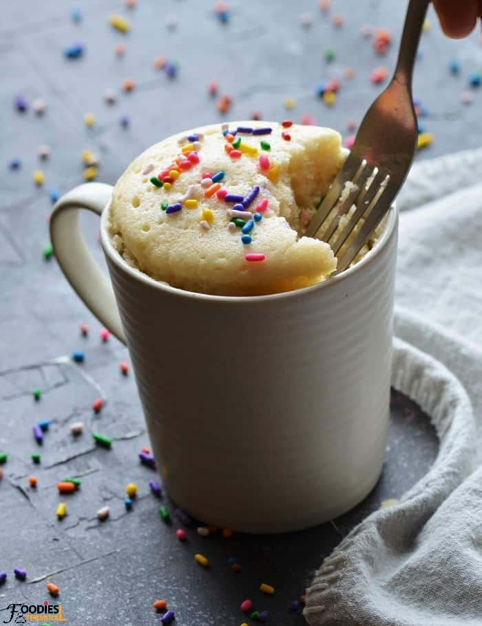

This chocolate mug cake is made in the microwave for a fudgy, chocolaty treat that is truly decadent. It's a great recipe when you need a delicious dessert that's ready in less than 10 minutes! Add a few chocolate chips to make it extra rich and gooey.